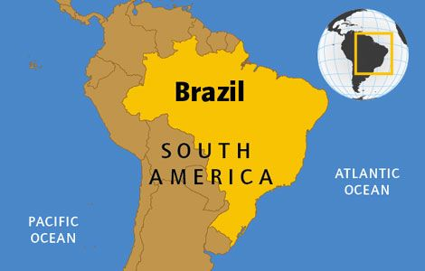
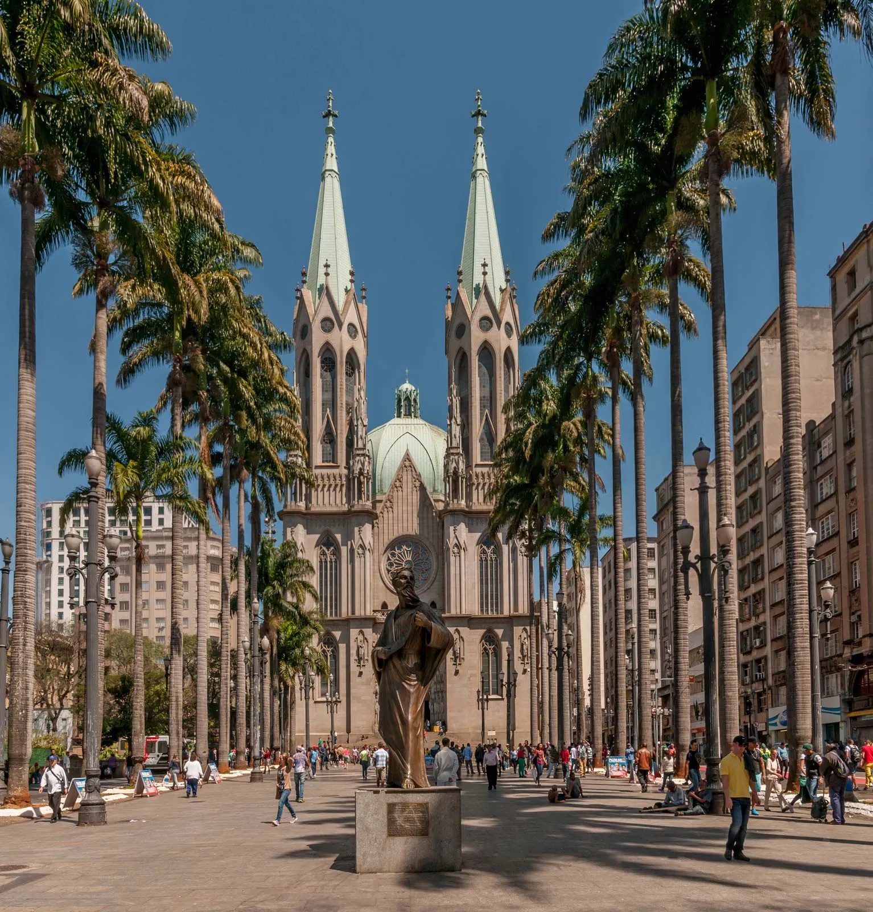
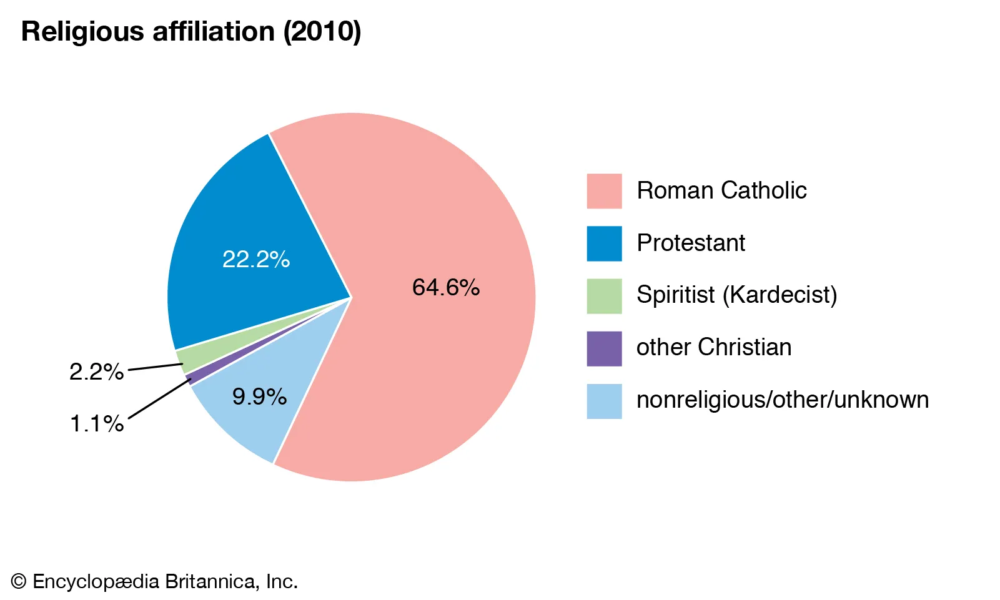

Land
The Brazilian landscape is immense and complex, with interspersed rivers, wetlands, mountains, and plateaus adjoining other major features and traversing the boundaries of states and regions.


LandThe Brazilian landscape is immense and complex, with interspersed rivers, wetlands, mountains, and plateaus adjoining other major features and traversing the boundaries of states and regions. |

|
ReligionBrazil has increasing numbers of adherents to Eastern Orthodoxy, Buddhism, Shintō, Islam, and other religions, all of which together are about numerically equal to those practicing a form of spiritualism, or spiritism, that is based on the 19th-century teachings of the French medium Allan Kardec. Many Brazilians also practice syncretic religions, such as Macumba, Candomblé, Xangô, and Umbanda, that blend Christian beliefs with rites imported from Africa or with spiritualistic practices. Candomblé predominates in Bahia. The Nagô Candomblé sect, derived from the religion of Yoruba slaves, is particularly widespread and influences the rites of other sects. Macumba and Umbanda have many adherents in Rio de Janeiro state, whereas Xangô is most influential in Pernambuco. Practitioners generally identify their deities with Roman Catholic saints and believe that these deities intercede for them with a supreme being. Priests and priestesses are mostly of African ancestry, but adherents are drawn from every ethnic group and social class, especially in urban centres. Perhaps tens of millions of Brazilian Catholics occasionally participate in syncretic or spiritualist feasts and ceremonies. |
  |
The Amazon basin has the greatest variety of plant species on Earth and an abundance of animal life, in
contrast to the scrublands that border it to the south and east. The Amazonian region includes vast
areas of rainforest, widely dispersed grasslands, and mangrove swamps in the tidal flats of the delta.
Individual plants of most species tend to be widely dispersed, so that blights and other natural threats
cause them only limited damage. A typical acre (0.4 hectare) of Amazonian forest may contain 250 or more
tree species (in contrast, an acre of woods in the northeastern United States might have only a dozen
species).
The crowns of giant Amazonian trees form a virtually closed canopy above several lower canopy layers,
all of which combine to allow no more than 10 percent of the sun’s rays to reach the ground below. As a
result, more plant and animal life is found in the canopy layers than on the ground. The tallest trees
may rise to 150–200 feet (45–60 metres) and are festooned with a wide variety of epiphytes, bromeliads,
and lianas, while their branches teem with animal life, including insects, snakes, tree frogs, numerous
types of monkeys, and a bewildering variety of birds. Several hundred bird species nest in the immediate
vicinity of the main Amazon channel, and alligators, anacondas, boa constrictors, capybaras, and several
smaller reptiles and mammals are found along the riverbanks. In the waters are manatees, freshwater
dolphins, and some 1,500 identified species of fish, including many types of piranhas (not all of them
flesh-eating), electric eels, and some 450 species of catfish. There may also be hundreds of
unidentified species.
The Amazon is also home to the world’s largest freshwater turtle, the yellow-headed sideneck
(Podocnemis), which weighs an average of 150 pounds (70 kg) and is extinct everywhere else except on the
island of Madagascar. The turtles, once a mainstay of local Indians’ diets, are now endangered, but they
continue to be hunted illegally for their meat.